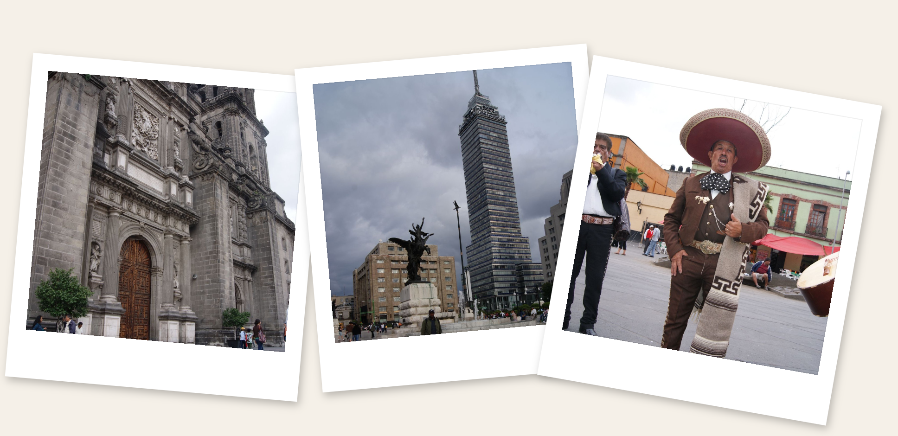

Mexico City — District Fédéral

Arrivée
Après un long vol, nous avons enfin atterri à Mexico City, le cœur palpitant du Mexique. L'air chargé de la mégapole nous a frappés dès la sortie de l'aéroport.
Hébergement
Nous avons été accueillis par Claire et Cynthia, qui nous ont généreusement offert l'hospitalité dans leur appartement.
Sortie
Pour notre première soirée, nous nous sommes rendus à la Cantina de los Remedios, un endroit emblématique où nous avons dégusté des plats traditionnels mexicains dans une ambiance conviviale.
15 août — Teotihuacán
Ce jour-là, nous nous sommes aventurés dans l'ancienne cité de Teotihuacán. Marcher sur l'Avenue des Morts et gravir la Pyramide du Soleil ont été des moments inoubliables. Nous avons parcouru 40 km depuis Mexico City.
Bidonvilles
Plus tard, nous avons visité certains bidonvilles de Mexico. Cette expérience contrastante a révélé une autre facette de la ville, marquée par les difficultés mais aussi par la résilience des habitants.
16 août — Coyoacán, Centro Histórico & San Ángel
Début de journée à Coyoacán : Plaza Hidalgo, Jardin del Centenario, Museo Frida Kahlo. Puis Plaza Garibaldi pour les mariachi, la Catedral Metropolitana, le quartier bohème de San Ángel et El Ángel de la Independencia.
17 août — Chapultepec & Condesa
Matinée au Bosque de Chapultepec : Monumento de los Niños Héroes et Museo Nacional de Antropología. Exploration du métro (wagons réservés aux femmes). Soirée au Bar Pride dans le quartier de Condesa.